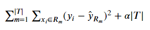
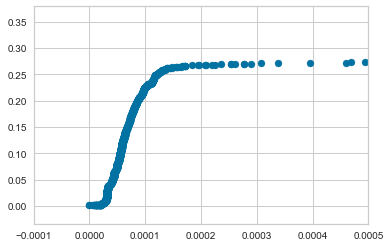
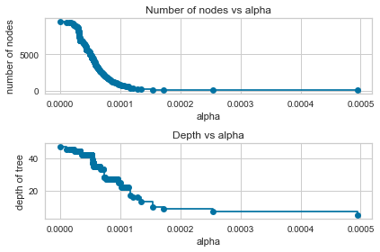

Decision Tree Pruning
As mentioned in our notebook on Decision Trees we can apply hard stops such as max_depth, max_leaf_nodes, or min_samples_leaf to enforce hard-and-fast rules we employ when fitting our Decision Trees to prevent them from growing unruly and thus overfitting.
Alternatively, Chapter 8 of ISL proposes a process called Cost Complexity Pruning, which acts as a sort of countermeasure for paring down a large tree that was trained more-or-less unpenalized. The method employs a constant alpha that penalizes our cost function for each of our terminal nodes for a given tree, denoted as |T|.
The Regression case looks like:
from IPython.display import Image
Image('images/regression_cost_prune.PNG')
(Obviously, the Classification has the same term at the end, just a more-appropriate loss function.)
They go on to state an interesting property of this form
As we increase
alphafrom zero, branches get pruned from the tree in a predictable fashion, so obtaining the whole sequence of subtrees as a function ofalphais easy.
I really like this video’s explanation of that intuition.
In scikit-learn
Note: This section is only relevant as of version 0.22.
At the time of writing this, the docs regarding this feature aren’t live yet, so I’ll borrow heavier than usual in lieu of being able to link a permanent URL.
Otherwise, let’s jump into it.
We draw on a sample dataset used for classification problems
%pylab inline
from yellowbrick.datasets import load_credit
X, y = load_credit()Populating the interactive namespace from numpy and matplotlib
X.head()| limit | sex | edu | married | age | apr_delay | may_delay | jun_delay | jul_delay | aug_delay | ... | jun_bill | jul_bill | aug_bill | sep_bill | apr_pay | may_pay | jun_pay | jul_pay | aug_pay | sep_pay | |
|---|---|---|---|---|---|---|---|---|---|---|---|---|---|---|---|---|---|---|---|---|---|
| 0 | 20000 | 2 | 2 | 1 | 24 | 2 | 2 | -1 | -1 | -2 | ... | 689 | 0 | 0 | 0 | 0 | 689 | 0 | 0 | 0 | 0 |
| 1 | 120000 | 2 | 2 | 2 | 26 | -1 | 2 | 0 | 0 | 0 | ... | 2682 | 3272 | 3455 | 3261 | 0 | 1000 | 1000 | 1000 | 0 | 2000 |
| 2 | 90000 | 2 | 2 | 2 | 34 | 0 | 0 | 0 | 0 | 0 | ... | 13559 | 14331 | 14948 | 15549 | 1518 | 1500 | 1000 | 1000 | 1000 | 5000 |
| 3 | 50000 | 2 | 2 | 1 | 37 | 0 | 0 | 0 | 0 | 0 | ... | 49291 | 28314 | 28959 | 29547 | 2000 | 2019 | 1200 | 1100 | 1069 | 1000 |
| 4 | 50000 | 1 | 2 | 1 | 57 | -1 | 0 | -1 | 0 | 0 | ... | 35835 | 20940 | 19146 | 19131 | 2000 | 36681 | 10000 | 9000 | 689 | 679 |
5 rows × 23 columns
And we can just sausage it right into a Decision Tree with sklearn
from sklearn.tree import DecisionTreeClassifier
clf = DecisionTreeClassifier(random_state=0)
clf.fit(X, y)DecisionTreeClassifier(ccp_alpha=0.0, class_weight=None, criterion='gini',
max_depth=None, max_features=None, max_leaf_nodes=None,
min_impurity_decrease=0.0, min_impurity_split=None,
min_samples_leaf=1, min_samples_split=2,
min_weight_fraction_leaf=0.0, presort='deprecated',
random_state=0, splitter='best')
And if we fit it with the default arguments, we’d wind up getting a tree that had 4750 terminal nodes
clf.get_n_leaves()4750
On the otherhand, if we re-instantiated clf as a blank DecisionTreeClassifier
clf = DecisionTreeClassifier(random_state=0)And called .cost_complexity_pruning_path() instead of fit()
path = clf.cost_complexity_pruning_path(X, y)Behind the scenes this actually fits the generic Decision Tree, then iteratively ratchets up our alpha value and aggregates the impurities of each terminal node. The path variable gets loaded with arrays ccp_alphas and impurities– the values of alpha that cause changes in the impurities and their corresponding results.
path.ccp_alphasarray([0.00000000e+00, 0.00000000e+00, 6.48148148e-06, ...,
3.34121368e-03, 1.03500728e-02, 5.24158517e-02])
path.impuritiesarray([0.00074444, 0.00074444, 0.00076389, ..., 0.2817752 , 0.29212527,
0.34454112])
We wind up finding 1899 different values for alpha
len(path.ccp_alphas)1889
And look at how sensitive impurity is to different alpha values– check that x-scale!
fix, ax = plt.subplots()
ax.scatter(path.ccp_alphas, path.impurities)
ax.set_xlim([-0.0001, 0.0005])(-0.0001, 0.0005)

To cement our intuition here, let’s train a couple hundred Decision Trees using increasing values of alpha
clfs = []
for ccp_alpha in path.ccp_alphas[::10]:
clf = DecisionTreeClassifier(random_state=0, ccp_alpha=ccp_alpha)
clf.fit(X, y)
clfs.append(clf)It should be obvious that “penalize complexity with high values of alpha” leads a consistent decrease in the number of terminal nodes as well as the depth of our Decision Trees
ccp_alphas = path.ccp_alphas[::10]
node_counts = [clf.tree_.node_count for clf in clfs]
depth = [clf.tree_.max_depth for clf in clfs]
fig, ax = plt.subplots(2, 1)
ax[0].plot(ccp_alphas, node_counts, marker='o', drawstyle="steps-post")
ax[0].set_xlabel("alpha")
ax[0].set_ylabel("number of nodes")
ax[0].set_title("Number of nodes vs alpha")
ax[1].plot(ccp_alphas, depth, marker='o', drawstyle="steps-post")
ax[1].set_xlabel("alpha")
ax[1].set_ylabel("depth of tree")
ax[1].set_title("Depth vs alpha")
fig.tight_layout()
Finally, as with everything in ISL, determining the right value of alpha for you is a matter of setting up the appropriate Cross Validation routine.